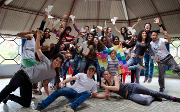

Objetivo General
Garantizar la sostenibilidad organizacional y social de la Confederación Agrosolidaria Colombia, a través de la inclusión del enfoque de complemento intergeneracional, promoviendo la participación activa de los Hereder@s Agrosolidari@s en la dinámica socioeconómica de las familias asociadas.
Objetivo Específico
Diseñar e implementar actividades que dinamicen la participación de las hijas e hijos de las familias Agrosolidarias al proceso organizativo, administrativo y programático, para fortalecer la incidencia colectiva en el circuito agroalimentario, artesanal y de turismo comunitario, desafiando relaciones negativas de poder en la familia, organización y sociedad, contribuyendo a una sociedad global más inclusiva.
Plan Educativo
L@s Hereder@s y sus familias participan en procesos educativos constructivistas en los que se abordan temas como: finanzas comunitarias, agricultura familiar agroecológica, comercio justo, consumo responsable, actoria social, organización comunitaria, gobierno comunitario, control social, conservación de la naturaleza, radio comunitaria, músicas comunitarias, teatro comunitario, narración y literatura, cocinas ancestrales y permacultura.
Cosecha futura, fondo educativo.
Si estas interesado en aplicar al beneficio educativo, llena el formulario sobre este enlace.
Recuerde que con su apoyo podemos hacer más.
Donaciones Bancarias en Pesos - Colombia
Beneficiario: AgroSolidaria Confederación Colombia Nit. 900.414335-4
Banco: Banco Caja Social – Sogamoso - Boyacá
Tipo de Cuenta: Corriente - Número de Cuenta: 21003013088
Por favor envía la copia de la consignación por correo electrónico a: secretariaboyaca@agrosolidaria.org
Si deseas más información para realizar tu transacción en Colombia, por favor comunícate al móvil: 311 846 58 25

Donaciones Bancarias en Dólares
Nombre de Banco Intermediario: Citibank New York - ABA: 021000089 - Swift: CITIUS33
Nombre de Banco Beneficiario: Banco Caja Social - Swift: CASOCOBB - Cuenta No.: 36020183
Beneficiario Final: Confederación de Prosumidores Agroecológicos AGROSOLIDARIA COLOMBIA – Nit. 900.414335-4
Número de Cuenta: 21003013088 - Detalles de pago: Donación
Si deseas más información para realizar tu transacción por favor comunícate al correo:
secretariaboyaca@agrosolidaria.org o al móvil: (+57) 311 846 58 25
Cosecha Futura - Fondo Educativo
Porque la mejor época para sembrar naranjas, fué hace diez años, ya tendriamos un naranjal.
Cuentanos tú Historia
Si cuentas con imagenes preciadas, envialas a internet@agrosolidaria.org junto con la historia que hará parte de este proceso.
Cuentanos tú Historia
Si cuentas con imagenes preciadas, envialas a internet@agrosolidaria.org junto con la historia que hará parte de este proceso.
Cuentanos tú Historia
Si cuentas con imagenes preciadas, envialas a internet@agrosolidaria.org junto con la historia que hará parte de este proceso.
Cuentanos tú Historia
Si cuentas con imagenes preciadas, envialas a internet@agrosolidaria.org junto con la historia que hará parte de este proceso.
Cuentanos tú Historia
Si cuentas con imagenes preciadas, envialas a internet@agrosolidaria.org junto con la historia que hará parte de este proceso.


{kind=link}
{kind=link}
{kind=link}
{kind=link}
{kind=link}
{kind=link}
{kind=link}
{kind=link}
{kind=link}
{kind=link}
{kind=link}